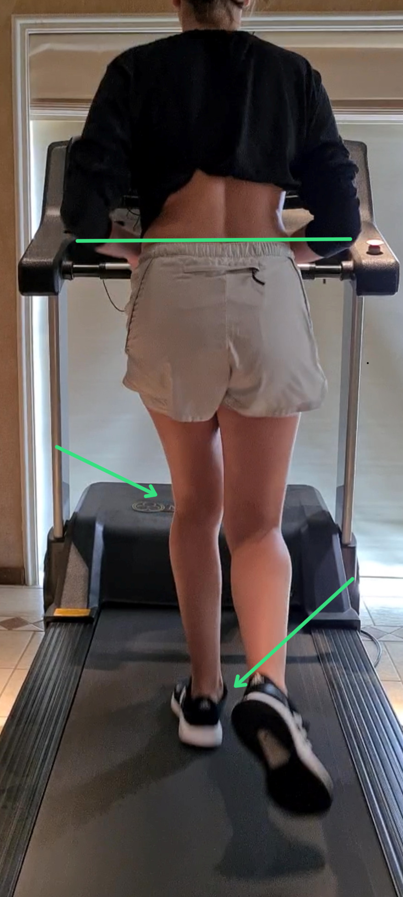
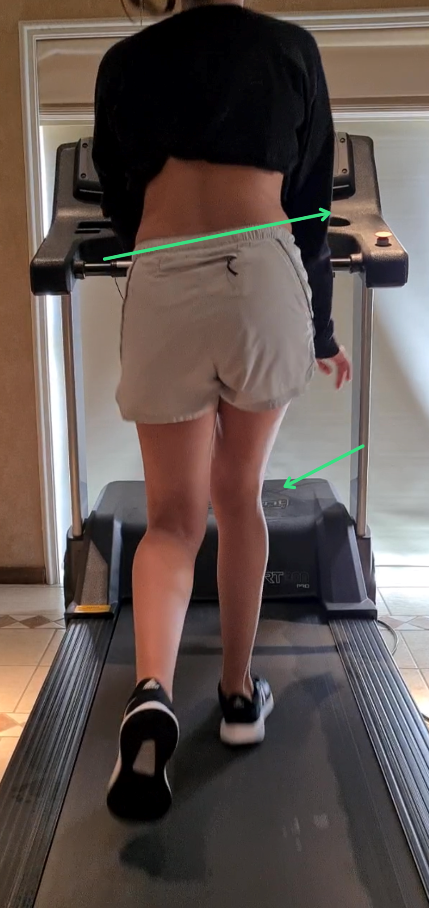
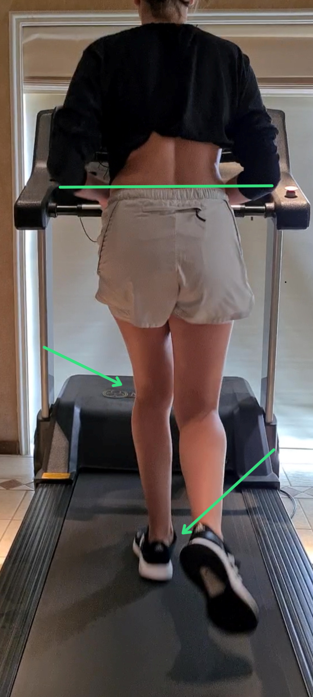
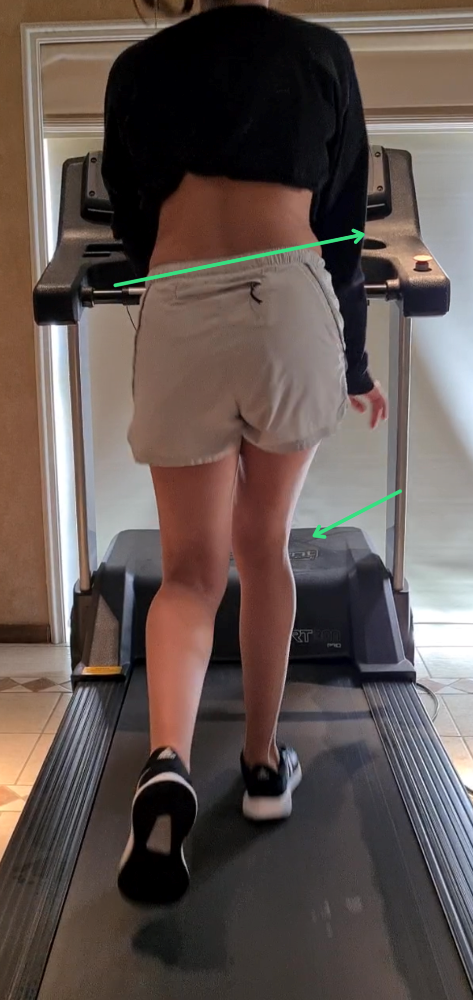

A avaliação precisa compreender a história motora do cliente e conhecer as características anatômicas, próprias de cada indivíduo, que influenciam o movimento. As lesões pregressas não devem ser minimizadas e consideradas apenas como achados de exames de imagem, pois indicam fragilidades dentro de uma cadeia cinética e precisam ser endereçadas, muitas vezes através de controle das articulações adjacentes. Certas lesões necessitam de adaptações nos gestos motores e no repertório de treinamento de forma permanente. A perda de estrutura, principalmente nas articulações, limita a capacidade de mobilidade, estabilidade e controle de carga.
Nossa avaliação tende a ser complexa. O quadril, a coluna e a pelve fazem parte de um sistema complexo, não é possível tratá-los de forma independente se trabalham em sintonia. A cervical responde e se adapta a pequenos desvios do centro de gravidade, de modo que tratar diretamente uma cervical sem compreender o balanço sagital da coluna e da pelve não é eficaz. O joelho é completamente dependente do quadril, do tornozelo e do pé.
Quando começamos a olhar o corpo de forma integrada é difícil voltar a pensar em segmentos. A escolha de repertório de exercícios também depende da preferência motora e da morfologia do paciente.
O paciente que necessita ou deseja aprofundar a compreensão de seus padrões motores podem optar por realizar uma avaliação mais detalhada para definir o seu perfil biomecânico funcional. No caso de pacientes com dor lombar ou questões nos quadris, essa avaliação é fundamental.
Existe uma linha de raciocínio para compreeender as opções motoras baseadas na nossa morfologia. A preferência de caminharmos com os membros inferiores mais voltados para dentro ou para fora é herdada, assim como as curvaturas da nossa coluna vertebral. Podemos estar bem ou mal adaptados as nossas preferências morfológicas originais e durante a avaliação isso será percebido e será a base para o tratamento.
Determinados exames de imagem associados a observação clínica nos possibilitam avaliar o perfil biomecânico funcional. A torção dos ossos do quadril é um dos principais indicadores a serem pesquisados. O EOS é um exame de imagem muito seguro e com baixa carga de irradiação que nos fornece os dados necessários para a avaliação. Caso o paciente não tenha acesso a este exame, uma tomografia de quadris associada a radiografias panorâmicas da coluna vertebral e da bacia em posição ortostática serão suficientes. A vantagem desta avaliação é permitir escolhas de repertório de exercícios ainda mais expecíficos para o indivíduo.
A avaliação de marcha e corrida é uma ferramenta importante para perceber as preferências motoras do indivíduo. Os padrões de desalinhamentro articular ou déficit de estabilização segmentar aparecem com frequencia nas atividades cíclicas como a marcha e a corrida. Muitas vezes, uma questão complexa como uma escoliose dinâmica pode ser compreeendida ao se observar uma pronação do tornozelo e/ou uma queda da pelve durante a fase de apoio da marcha.
A avaliação do perfil biomecânico funcional pode ajudar a formular estratégias de tratamento e escolha de repertório de exercícios mais específicas para cada indivíduo e ajuda na eficiencia do tratamento.